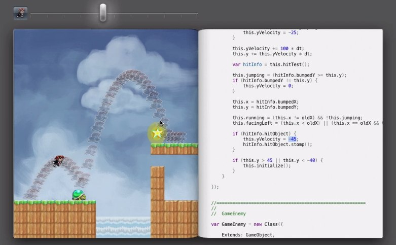

… Between Front- and Backend…
- Software Engineer and Photographer
- Worked for several companies (Groupon, Shell …)
- Java, PHP, Ruby and JavaScript
Inspired by
Bret Victor „Inventing on Principle”

HTML5 (and the abundance of possibilities)
Modern browsers allow same ux as native applications
- meaningful elements + attributes giving html structure and accessible content
- less workarounds and better maintenance
- SVG allows complex vector graphics
JavaScript
- enormous growth of - well tested and maintained - js libraries since the release of NodeJS in 2009
- todays browser execute js nearly as effective as c code
- JavaScript has same capabilities as serverside languages
- powerful API's to sound, picture, video, location, microphone, camera…
CSS
- filters, transitions and animations allow to seperate design behaviour from application behaviour
- ux does not so much depend from programming anymore
WYCIWYG
Instant visualisation of data + behaviour
becomes an ease
Thoughts
- get into JavaScript + CSS and start experimenting
- evaluate ideas instantly
- more iterative development
- UX is an interactive process… software development should be too
SoftwareDev <=> UX
(Frontend)Developers should do be more involved in UX
UX Designer should be more involved in Software Development